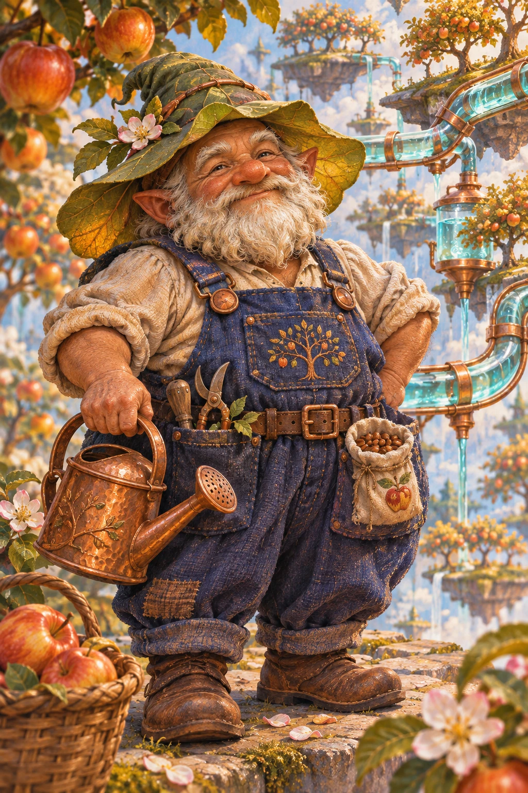

1. Вечер, который забыл закончиться
Подружить героев, дать им собственный маленький успех и заметить сбой времени.
Открыть вечерВ Фонарной Гавани перестаёт гаснуть вечерняя звезда. Затем замолкают колокола, яблоки перестают созревать, а знакомые дороги ведут на вчерашние острова. Трое друзей получают дом-корабль «Чайник» и берутся вернуть миру завтрашний день.
12 вечеров по 2,5–3,5 часа с паузой каждые 40–50 минут. Каждый вечер делится на три законченных отрезка; можно сыграть за 24 короткие встречи.
Перед игрой договоритесь о жесте «пауза», открытом выходе из сцены и уровне опасности. По умолчанию падение ловят страховочные сети, поражение означает отступление или задержку, спутники не погибают ради драматизма. Ребёнок не обязан объяснять, почему ему нужна пауза.
Начало: уровень 3. После ремонта моста в вечере 6 предложите ведущему повышение до 4 через штатные инструменты; после вечера 9 — до 5. Это добровольные контрольные точки, не заранее применённые события. Все подготовленные бои посильны группе уровня 3; повышение не необходимо для победы.
Вечера 1–2 дают дом и задачу. Острова 3–8 можно посещать в другом порядке: документы указывают сразу несколько адресов. Вечер 9 — совет и передышка. 10–11 — встреча с Северином и решение. 12 — последствия и праздник. Не запирайте путь к финалу за сбором всех сувениров.
Не прогоняйте будущие главы как уже случившиеся события. NPC рассказывает только то, что знает. Заметка героя остаётся гипотезой, пока её не проверили. Итоги и перемещения в игре подтверждает ведущий обычными инструментами мира.
У каждого узлового вывода есть запасные источники. Задержку показывают праздник, сад и колокола; временный характер защиты — протокол, Руна и журнал Северина; новый путь — опыт корабля, сад, Омб; безопасный запуск — Ильер, схема дворца и пульт Маяка. Один пропущенный остров не блокирует финал.
Если интерес падает, завершите ближайший маленький успех и вернитесь на корабль. По очереди предлагайте физическое действие, проверку идеи и разговор; не закрепляйте эти роли за детьми или взрослыми. Обычная сцена занимает 30–55 минут, затем пауза.
Провал: назовите конкретное изменение, сохраните доступ к основной улике и предложите новый подход. Поражение в необязательном бою — безопасное отступление. Оно не создаёт автоматического исцеления: отдых и лечение применяются штатно.
Подружить героев, дать им собственный маленький успех и заметить сбой времени.
Открыть вечер
Сделать корабль общим домом; научить совместным решениям и открыть свободный выбор маршрута.
Открыть вечер
Показать конкретную цену неподвижности и дать первую полезную альтернативу старой схеме.
Открыть вечер
Научить различать документ, свидетельство и догадку; получить честный поворот о подписи Руны.
Открыть вечер
Дать весёлый социальный вечер, пространство личному выбору Тэс и полезный инструмент без обязательной платы воспоминаниями.
Открыть вечер
Повернуть расследование к решению; дать совместную инженерную сцену и честно назвать альтернативы финала.
Открыть вечер
Дать чувство огромного мира, проверить прошлое и найти путь к дворцу без единственного ключа.
Открыть вечер
Разыграть содержательную музыкальную загадку без проверки слуха; дать всем троим равное право на решение.
Открыть вечерВернуть последствия прошлых решений, завершить поворот Руны и подготовить собственный план партии.
Открыть вечер
Встретить человека за системой, дать возможность несогласия и получить доступ к финалу без обязательного боя или прощения.
Открыть вечер
Дать каждому герою незаменимое действие и воплотить выбранное устройство мира с видимыми последствиями.
Открыть вечер
Показать последствия и дать каждому закончить личную историю; оставить не обязательный крючок, а чувство прожитого путешествия.
Открыть вечер
Хозяйка «Чайника» умеет чинить паруса и помнит множество островных дорог.
Хочет: Вернуть кораблю экипаж, а себе — смелость говорить неприятную правду.
Голос: Короткие фразы; сравнивает сложное с приготовлением чая. «Заварим не спеша. Решим — вместе».
Граница: Не командует героями и не решает загадки за них. Отдаёт корабль в пользование, остаётся связной в гавани.
Скрытое: Стыдится подписи под старым протоколом. При прямом вопросе признаётся; не нужна успешная проверка.
Когда раскрывать: Открыто делится маршрутами с вечера 1. О подписи говорит после найденного протокола или при честном прямом разговоре.
Предлагает: Корабль, чай, ремонт и честное признание на совете.
Изменение: Если её выслушали, сама расскажет горожанам о своей ошибке; если отвергли, всё равно передаст корабельный журнал.

Любопытный почтовый лис звенит тремя разными нотами и собирает смешные человеческие выражения.
Хочет: Выбрать собственный адрес, а не всегда доставлять чужие письма.
Голос: Буквально понимает пословицы. «Держать нос по ветру? Он прикручен».
Граница: Не боевая единица, не бессмертная отмычка и не носитель всех ответов. Просит разрешения перед тем, как что-то взять.
Скрытое: На внутренней крышке написано «курьер, не источник питания». Этот факт можно узнать без разборки и риска.
Когда раскрывать: О пустой кассете говорит в вечере 2; надпись показывает по просьбе. Его личность не является тайным злодеем.
Предлагает: Доставить письмо, сыграть звук, остаться рядом; решения принимает группа.
Изменение: В финале просит разрешения написать в адресной книге: «Дом — Чайник».

Ухаживает за садами и говорит о медленных вещах с большим воодушевлением.
Хочет: Чтобы сад снова рос, не торопя старую черепаху.
Голос: Говорит медленно, затем внезапно очень быстро перечисляет сорта яблок.
Граница: Не отдаст росток тому, кто обещает командовать черепахой; предложит совместную заботу.
Скрытое: Боится, что его собственный новый сорт окажется никому не нужен.
Когда раскрывать: Данные открыты; о страхе говорит тому, кто спросит о его работе.
Предлагает: Семя-домик и свидетельство нового роста.
Изменение: При поддержке назовёт сорт именем, которое придумают игроки.

Хранит книги так, чтобы их можно было найти и вернуть, а не спрятать навсегда.
Хочет: Сохранить разные свидетельства, даже если они противоречат её любимой версии.
Голос: Тихо, отчётливо; перед ответом ставит чашку точно на середину блюдца.
Граница: Не даст уничтожить оригинал, но бесплатно сделает копию и прочитает текст вслух.
Скрытое: Раньше она принимала печать за доказательство истинности; теперь отмечает источник каждого рассказа.
Когда раскрывать: Все три документа доступны после помощи с бумажными лодками или простой просьбы.
Предлагает: Копии документов и адреса свидетелей.
Изменение: На совете будет защищать право сохранять несколько версий карты.

Торгует историями и отражениями; условия сделки всегда произносит вслух.
Хочет: Совершить сделку, которую потом будут пересказывать с удовольствием.
Голос: Торжественно называет цену, затем шепчет бытовую мелочь. «И баночку верните».
Граница: Не забирает настоящие воспоминания, имена или свободу. Обмен — рассказ, работа, монеты либо вежливый отказ.
Скрытое: Прячет собственное неудачное изобретение — зеркало, показывающее только добрые поступки продавца.
Когда раскрывать: Маршрут можно получить у грузчиков бесплатно; сделка не обязательна.
Предлагает: Честное зеркало и контакт мастера Ильера.
Изменение: При справедливой сделке пришлёт на совет отражатель; при ссоре выполнит только обещанное.

Может починить почти любую вещь, если хозяин объяснит, чего хочет от неё.
Хочет: Построить систему, которую смогут чинить другие.
Голос: Думает вслух, чертит на обрезках. «Надёжно — это когда понятно следующему мастеру».
Граница: Не строит единственную чудесную кнопку, которая решит чужое согласие.
Скрытое: Гордится своим прототипом, но прямо признаёт, что его никто ещё не испытывал на целом архипелаге.
Когда раскрывать: Объясняет риски каждого плана без проверки навыка.
Предлагает: Перемычка и схема безопасного отключения.
Изменение: Придёт на финальный запуск только по приглашению, не станет героем вместо партии.
Возит почту и наблюдателей звёзд. Отвечает медленно и с сухим юмором.
Хочет: Продолжать ходить своим путём, не превращаясь в неподвижный остров.
Голос: Низкий неторопливый голос. «Я не опоздал. У вас слишком маленькие часы».
Граница: Не телепортирует к ответу; может безопасно отвезти по известному маршруту.
Скрытое: Ему дорог старый маршрут, хотя новый удобнее; он понимает страх Северина, но не оправдывает принуждение.
Когда раскрывать: Рассказывает при совместном наблюдении, без требования выиграть бой.
Предлагает: Звёздный снимок и безопасный подъезд к дворцу.
Изменение: В эпилоге станет почтовым путём выбранного устройства мира.

Собирает жителей на совет и старается дать слово даже тихим.
Хочет: Услышать решение города, а не самый громкий голос.
Голос: Вежливый распорядитель. «Слово закончится, когда закончите мысль, а не когда я взмахну крылом».
Граница: Не принимает красноречие одного героя за согласие всего города.
Скрытое: Сам иногда любит порядок больше, чем неудобные вопросы; признает это, если ему покажут.
Когда раскрывать: Открытые протоколы и демонстрация; никакого тайного правильного мнения.
Предлагает: Запись четырёх независимых сигналов и представитель города.
Изменение: На совете следит, чтобы младший герой также получил полноценный ход.

Картограф, чьи старые карты до сих пор висят в капитанских каютах.
Хочет: Быть уверенным, что следующая ошибка не причинит никому беды.
Голос: Точен, никогда не повышает голос. «Я хотел выиграть минуту. Потом не смог решиться её вернуть».
Граница: Ему можно сочувствовать и одновременно отказать в праве управлять всеми. Прощение и должность не обязательны.
Скрытое: Сохранил чайный стол того дня, когда Руна ещё верила ему без вопросов. Друг жив и может уйти или остаться по собственному желанию.
Когда раскрывать: Признаётся при предъявлении протокола, при разговоре о последствиях или после осмотра рычага. Проверка убеждения не блокирует правду.
Предлагает: Открыть ручной доступ и объяснить механизм. Его участие в будущем зависит от решения жителей.
Изменение: Если ему предложат ограниченную ответственность, станет картографом под проверкой; если отстранят, уйдёт учиться слушать без наказательной трагедии.
Записывайте после вечера: какие факты узнали; кому что обещали; что изменили; кого пригласили; что осталось открытым. Эпилог строится по этим записям. Не выдавайте предполагаемый успех за случившийся.
Схема показывает связи для подготовки. Свежие адреса и названия вводятся в рассказ тогда, когда герои их узнают. Переходы между островами можно переставлять.